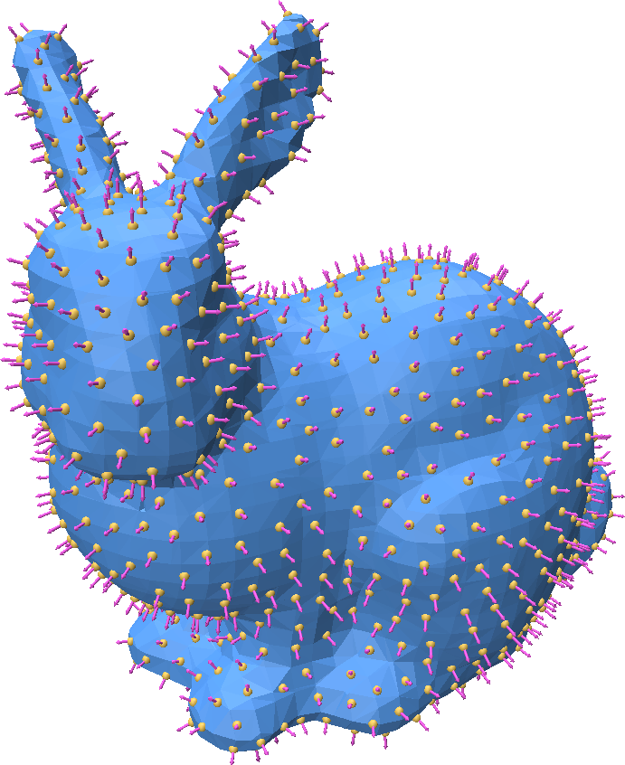
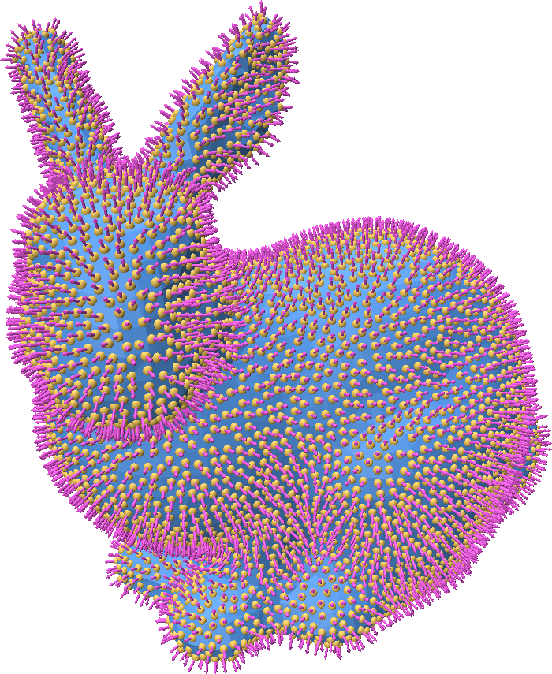

Mesh Sampling
Point Cloud Utils provides tools for generating point samples on a triangle mesh.
Representing mesh-surface samples in Point Cloud Utils
Point Cloud Utils returns samples on the surface of a mesh using Barycentric Coordinates. i.e. each sample is encoded as:
- The index of the mesh face containing it (usually referred to as
fid)
- The barycentric coordinates of the point within that face (usually referred to as
bc)
The reason for encoding points in this way is that it allows us to interpolate any quantity stored at the vertices (including their positions) of a mesh to the sample positions, and thus sample vertex attributes.
To recover vertex quantities from fid, bc pairs use the function pcu.interpolate_barycentric_coords(f, fid, bc, vertex_quantity)
Generating random samples on a mesh
We often want to sample points uniformly at random on a 3D surface. Point Cloud Utils provides a simple function for generating iid point samples such that each sample has equal probability of landing anywhere on the surface.
import point_cloud_utils as pcu
# v is a [n, 3] shaped NumPy array of vertices
# f is a [m, 3] shaped integer NumPy array of indices into v
# n is a [n, 3] shaped NumPy array of vertex normals
v, f, n = pcu.load_mesh_vfn("bunny.ply")
# Generate barycentric coordinates of random samples
num_samples = 1000
fid, bc = pcu.sample_mesh_random(v, f, num_samples)
# Interpolate the vertex positions and normals using the returned barycentric coordinates
# to get sample positions and normals
rand_positions = pcu.interpolate_barycentric_coords(f, fid, bc, v)
rand_normals = pcu.interpolate_barycentric_coords(f, fid, bc, n)
 Generating random (yellow) points on the mesh. We can also extract vertex attributes such as normals (pink arrows) at the points.
Generating random (yellow) points on the mesh. We can also extract vertex attributes such as normals (pink arrows) at the points.
Generating blue-noise random samples on a mesh
We may want to sample a surface in a random way such that the samples are evenly spaced apart.
Such a distribution of points is called a "blue noise" distribution. Formally, this means that the expected distance between points on the surface is some constant. i.e. for a set of points \(P\):
$$
\mathbb{E}_{x \in P} ||x - \text{nearest_neighbor}(x)|| = \epsilon
$$
This can be achieved with Poisson Disk Sampling. Point cloud utils supports sampling a mesh such that there are either (1) a target number of points or (2) such that the points are separated by some radius.
import point_cloud_utils as pcu
import numpy as np
# v is a [n, 3] shaped NumPy array of vertices
# f is a [m, 3] shaped integer NumPy array of indices into v
# n is a [n, 3] shaped NumPy array of vertex normals
v, f, n = pcu.load_mesh_vfn("bunny.ply")
### Option 1:
### Generating points according to a blue noise distribution with a target number of points
### NOTE: The number of returned points may not be exactly 1000
target_num_pts= 1000
# Generate barycentric coordinates of random samples
fid, bc = pcu.sample_mesh_poisson_disk(v, f, num_samples=target_num_pts)
# Interpolate the vertex positions and normals using the returned barycentric coordinates
# to get sample positions and normals
rand_positions = pcu.interpolate_barycentric_coords(f, fid, bc, v)
rand_normals = pcu.interpolate_barycentric_coords(f, fid, bc, n)
### Option 2:
### Generating points according to a blue noise distribution with a target nradius separating each point
target_radius = np.linalg.norm(p.max(0) - p.min(0)) * 0.01 # 1% of the bounding box radius
# Generate barycentric coordinates of random samples
fid, bc = pcu.sample_mesh_poisson_disk(v, f, num_samples=-1, radius=target_radius)
# Interpolate the vertex positions and normals using the returned barycentric coordinates
# to get sample positions and normals
rand_positions = pcu.interpolate_barycentric_coords(f, fid, bc, v)
rand_normals = pcu.interpolate_barycentric_coords(f, fid, bc, n)


Generating blue noise samples on a mesh using a target number of points (left) and a target radius (right).